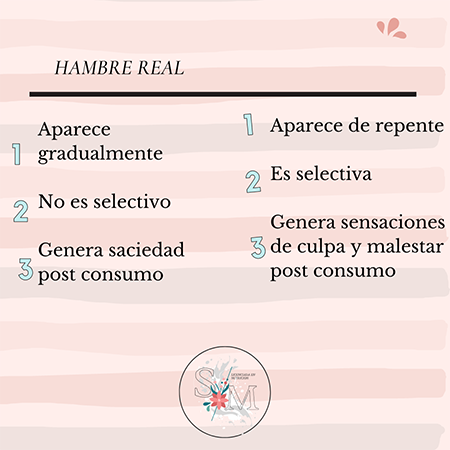

Taller de Cocina Saludable
por Sofia Manchado
Te invito a participar de este evento el 11 de Noviembre para lograr el descenso de peso!
Hambre Real vs Hambre Emocional
por Sofia Manchado
Te invito a entender un poco mas la diferencia entre Hambre Real y Hambre Emocional
Tratamiento Nutricional
por Sofia Manchado
Te invito a participar de este evento el 25 de Agosto para charlar de Tratamiento Nutricional
